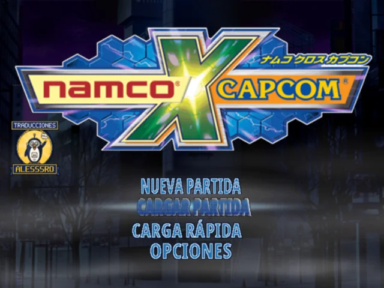
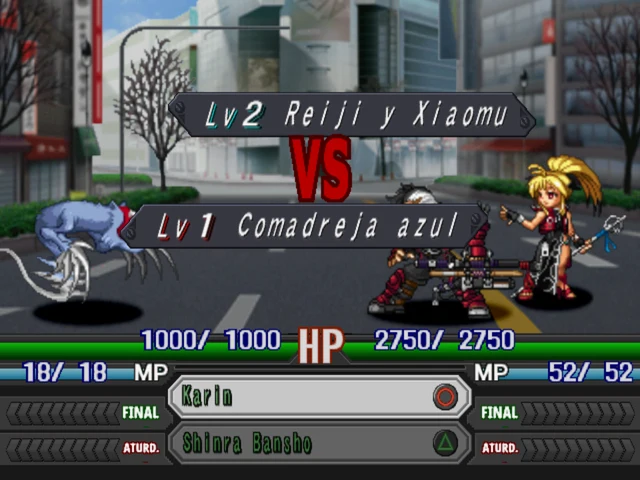

PlayStation 2RPG tácticoNuevo
Namco x Capcom
El gran crossover de 2005 que solo salió en Japón: Ryu, KOS-MOS, Megaman, Jin Kazama y decenas de personajes más en una sola aventura. Más de 22.800 líneas de guion traducidas.
- Guion completo, menús, objetos, técnicas y biografías
- Tutorial y pantalla de título redibujada
- Basada en el parche inglés de TransGen (con su crédito)
Necesitas: la versión japonesa (SLPS-25505) con el parche inglés de TransGen, en .iso o .chd.